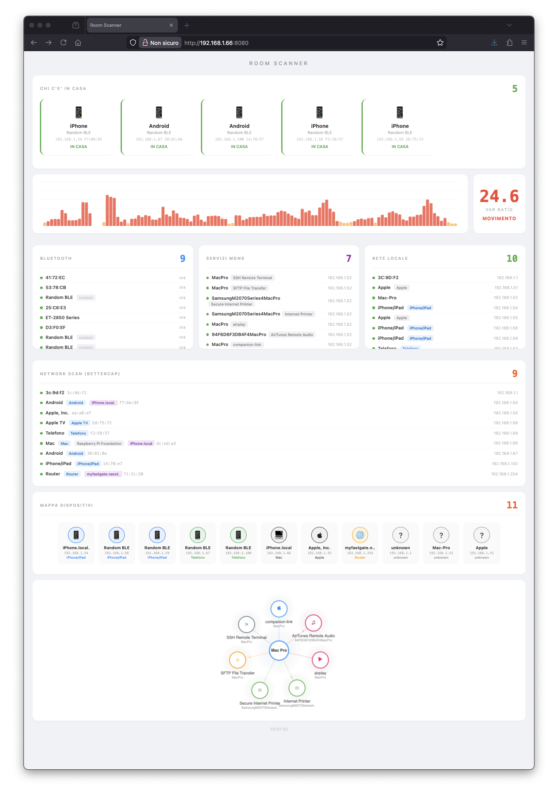

// Il Cassetto
Sezione 00. L'antefattoTre di notte. La iena si sveglia, va in bagno, torna. Si infila sotto le coperte e fa: "C'e' una luce nel capannone." Mezzo addormentato: "Sara' il sensore di movimento." "No. Si e' accesa e spenta. Come uno schermo."
Mi tiro su. Prendo il tablet dal comodino, apro l'app delle telecamere. Una griglia di quadratini grigi in visione notturna. Capannone esterno: niente. Capannone interno: niente. L'angolo dove dice lei non e' coperto. Telecamere ovunque e quell'angolo non lo vede nessuna.
Mi vesto, prendo la torcia, chiamo Panna super addormentata, facciamo il giro completo. Capannoni, uffici, magazzino, perimetro. Niente. Nessun segno, nessuna porta forzata. Torno a letto.
La mattina la iena alza le spalle: "Te l'ho detto, era una luce." Si'. Probabilmente un riflesso. Ma il tarlo e' piantato. Le telecamere hanno angoli, direzioni, coni d'ombra. Sai dove stanno, sai dove non guardano. Chi conosce il layout conosce i buchi.
Due giorni dopo, cercando un cavo HDMI nel cassetto dello studio, trovo un Raspberry Pi 3. Stava li sotto un groviglio di cavi USB, una scheda SD senza etichetta e un alimentatore che forse era suo, forse no. Uno di quei cassetti dove finiscono le cose che "prima o poi mi servono". Di solito mentono. Questa volta no.
Il contesto: casa e azienda sono nello stesso posto. Uffici, capannoni, zona abitativa. Piu' di duemila metri quadri su piu' livelli e piu' edifici, con tre router collegati in cascata perche' un solo access point non copre neanche un terzo. Tre router, una rete, un sacco di muri spessi.
La domanda e' arrivata da sola: si puo' fare con il WiFi?
Un sistema che non si vede, non si evita. Niente ottica, niente angoli di ripresa, niente LED rossi. Solo segnali radio che attraversano i muri, rimbalzano sui corpi e raggiungono ogni angolo della struttura. Il WiFi copre gia' tutto: uffici, capannoni, magazzino, casa. Se puoi usarlo come sensore, hai una copertura che nessun impianto di telecamere puo' dare.
Ho preso il Pi dal cassetto, gli ho messo una SD fresca, l'ho attaccato alla rete e ho iniziato a sperimentare.
// Il Radar che Non Funziona
Sezione 01. WiFi CSI e i suoi limitiLa prima idea era la piu' ambiziosa: usare il WiFi come un radar. Si chiama Channel State Information e sulla carta e' una figata pazzesca. Ogni volta che un pacchetto WiFi viaggia dal router al dispositivo, attraversa l'aria. Se quell'aria e' vuota, il segnale arriva pulito. Se c'e' un corpo umano in mezzo, il segnale si distorce. Il corpo assorbe, riflette, diffrange. Ogni subcarrier OFDM cambia ampiezza e fase in modo leggermente diverso. Misuri la differenza e sai se qualcuno si e' mosso.
Il Pi 3 ha un chip WiFi Broadcom BCM43438. Esiste un firmware modificato, nexmon, che espone i dati CSI grezzi. Li catturi come pacchetti UDP sulla porta 5500: 274 byte ciascuno, header con magic number 0x1111, poi coppie di interi a 16 bit per ogni subcarrier. Parte reale e immaginaria, da cui ricavi l'ampiezza.
| 1 | def parse_csi_packet(data): |
| 2 | """Parsa un pacchetto CSI da nexmon (UDP porta 5500).""" |
| 3 | if len(data) < 18: |
| 4 | return None |
| 5 | |
| 6 | # Header: magic number 0x1111 |
| 7 | magic = struct.unpack(">H", data[0:2])[0] |
| 8 | if magic != 0x1111: |
| 9 | return None |
| 10 | |
| 11 | # Payload: coppie int16 (reale, immaginario) per subcarrier |
| 12 | csi_raw = data[18:] |
| 13 | n_samples = len(csi_raw) // 4 |
| 14 | csi = np.zeros(n_samples, dtype=complex) |
| 15 | |
| 16 | for i in range(n_samples): |
| 17 | off = i * 4 |
| 18 | real = struct.unpack("<h", csi_raw[off:off + 2])[0] |
| 19 | imag = struct.unpack("<h", csi_raw[off + 2:off + 4])[0] |
| 20 | csi[i] = complex(real, imag) |
| 21 | |
| 22 | return np.abs(csi) # ampiezza per subcarrier |
Calibri con la stanza vuota: raccogli 200 pacchetti, calcoli la varianza media delle ampiezze, quella diventa la baseline. Poi quando qualcuno entra, la varianza sale. Il rapporto varianza attuale su baseline ti da' un numero: sotto 3, stanza vuota. Sopra 3, qualcuno si muove.
Ho fatto una serie di test nell'arco della prima settimana. Stanza vuota, una persona che cammina, una persona seduta. La iena e' entrata per portarmi il caffe' e ho misurato anche quello.
| Condizione | Varianza | var_ratio |
|---|---|---|
| Stanza vuota | 8.817 | 1.0 |
| Una persona, si muove | 232.127 | 26.3 |
| Una persona, ferma | 52.000 | 5.9 |
| Due persone, ferme | 71.000 | 8.0 |
| Due persone, si muovono | 362.000 | 41.0 |
Il movimento lo vede. Var ratio a 26 quando cammini: inequivocabile. Ma il limite e' li: CSI vede il movimento, non le persone. Mi sono seduto sul divano col telefono. Fermo. Il var ratio e' sceso a 5, poi a 4, poi sotto la soglia. "Stanza vuota" ha detto il sistema. Ero li seduto. Per il CSI ero aria. Due persone ferme e una persona che cammina danno numeri simili.
Il problema fondamentale: il WiFi CSI misura la perturbazione del canale radio, non la presenza fisica. Un corpo fermo perturba pochissimo. Per contare persone statiche servirebbe un array di antenne e un modello ML addestrato su quella specifica stanza. Con un singolo Pi 3 e un chip WiFi consumer, non ci arrivi.
CSI resta nel progetto come sensore di movimento. Ma per rispondere a "chi c'e' in casa" serve altro.
// Il Pivot
Sezione 02. Se non puoi vedere le persone, vedi i loro dispositiviCambio di strategia. Ho spiegato il problema alla iena. "Ma se ogni persona ha un telefono, basta cercare i telefoni." A volte la iena riassume in una frase quello che tu stai cercando di teorizzare da tre giorni. Se non posso sentire i corpi, posso sentire i loro dispositivi. L'iPhone, l'iPad, il Samsung. Se li identifico, so chi c'e'.
Il problema: i telefoni moderni sono bastardi. Da iOS 14 e Android 10, quando si connettono al WiFi usano un MAC address randomizzato. Il MAC nella tabella ARP non e' quello reale dell'hardware. E' un indirizzo locally administered generato per-network. Il bit 1 del primo byte e' settato a 1: questo lo distingue da un MAC reale. Ma l'OUI lookup e' morto: i primi 3 byte non identificano piu' il produttore.
Come distinguo un iPhone da un Android da un iPad se non posso fidarmi del MAC? Devo trovare altri segnali. E i segnali ci sono. Parecchi.
// I Cinque Sensi
Sezione 03. ARP, mDNS, nmap, BLE, bettercapARP: la lista degli invitati
Il punto di partenza e' /proc/net/arp sul Pi. La leggi e hai l'elenco di tutti i dispositivi che hanno comunicato sulla rete locale: IP e MAC. Aggiorno ogni 10 secondi. E' grezza ma e' la base su cui costruire tutto il resto.
mDNS: chi si presenta con nome e cognome
Multicast DNS. I dispositivi Apple ne vanno matti. Ogni Mac, iPhone, iPad, Apple TV annuncia i propri servizi sulla rete: AirPlay, SSH, stampanti, file sharing. Un avahi-browse -tpar sul Pi e ti arriva l'elenco: "Mac Pro offre ssh, sftp, airplay, raop". Nome del dispositivo, IP, tipo di servizio. Gratis, nessuna scansione attiva.
nmap porta 62078: il timbro dell'iPhone
La chicca. Ogni iPhone e iPad tiene aperta la porta TCP 62078. E' il servizio lockdownd, quello che usa iTunes/Finder per sincronizzare. Sempre in ascolto, anche a telefono bloccato.
| 1 | # Scan della subnet per la porta lockdownd (iPhone/iPad) |
| 2 | sudo nmap -p 62078 -T4 --open 192.168.1.0/24 |
| 3 | |
| 4 | # Output: |
| 5 | # 192.168.1.54 62078/tcp open iphone-sync |
| 6 | # 192.168.1.59 62078/tcp open iphone-sync |
Scan di 30 secondi e sai quanti dispositivi Apple sono sulla rete. Non ti dice di chi e', ma quanti sono e a quale IP stanno.
BLE: l'orecchio passivo
Bluetooth Low Energy. Il Pi 3 ha un'antenna BLE integrata. Con hcitool lescan --duplicates catturi tutti gli advertisement BLE nelle vicinanze: stampanti, cuffie, smartwatch, speaker. La stampante Epson ET-2850 si annuncia ogni pochi secondi. I dispositivi personali con BLE attivo appaiono e scompaiono.
Un caveat: il chip del Pi condivide WiFi e Bluetooth. Con il firmware nexmon attivo per CSI, BLE si blocca. La fix e' un hciconfig hci0 reset all'avvio del thread. Resetti l'adapter, riparte.
Bettercap: il quinto senso
Bettercap gira sul Mac Pro, non sul Pi. Il Pi ha un quad-core ARM a 1.2 GHz del 2016 con 1 GB di RAM. Per sniffare una rete intera serve piu' muscolo. Bettercap espone una REST API sulla porta 8081, il Pi la interroga ogni 3 secondi e manda tutto in dashboard.
La vera potenza di bettercap non e' la lista degli host. E' il modulo net.sniff. Sniffa tutto il traffico mDNS della rete e accumula eventi. Ogni dispositivo che cerca un servizio via multicast lascia una traccia. Quella traccia e' un fingerprint.
| 1 | # Avvio bettercap sul Mac con REST API per il Pi |
| 2 | sudo bettercap -iface en0 -eval \ |
| 3 | "set api.rest.address 0.0.0.0; |
| 4 | set api.rest.port 8081; |
| 5 | set api.rest.username user; |
| 6 | set api.rest.password pass; |
| 7 | api.rest on; |
| 8 | net.probe on; # ARP probe per scoprire host |
| 9 | net.recon on; # Monitora la rete |
| 10 | net.sniff on" # Sniffa mDNS, DHCP, NBNS |
Qualche minuto e 1600 eventi mDNS catturati. Li analizzo per IP sorgente e ottengo i servizi che ogni dispositivo cerca sulla rete:
| IP | Servizi mDNS cercati | Verdetto |
|---|---|---|
| .54 | googlecast, atc, dns-sd | iPhone |
| .58 | companion-link, rdlink, sleep-proxy | iPhone/iPad |
| .100 | companion-link, rdlink, sleep-proxy | iPhone/iPad |
| .67 | googlecast | Android |
| .66 | airplay, ssh, sftp, apple-mobdev2 | Mac Pro |
Il trucco: un iPhone cerca _googlecast insieme a _atc, un servizio interno Apple. Un Android cerca solo _googlecast. Un iPhone/iPad cerca _companion-link e _sleep-proxy, servizi interni Apple che un Android non cercherebbe mai. Il traffico mDNS che il dispositivo genera e' il suo fingerprint. Non serve guardare il MAC.
// La Dashboard
Sezione 04. Sette thread, un browser
Tutto converge in un unico script Python: room_scanner.py. Sette thread in parallelo, un server HTTP sulla porta 8080, Server-Sent Events per aggiornare il browser ogni 2 secondi.
| 1 | # room_scanner.py - sette thread, un web server |
| 2 | |
| 3 | threads = [ |
| 4 | ("BLE", ble_thread), # hcitool lescan --duplicates |
| 5 | ("CSI", csi_thread), # UDP 5500, varianza subcarrier |
| 6 | ("mDNS", mdns_thread), # avahi-browse -tpar ogni 15s |
| 7 | ("ARP", arp_thread), # /proc/net/arp ogni 10s |
| 8 | ("Fingerprint", fingerprint_thread), # nmap -p 62078 ogni 30s |
| 9 | ("Bettercap", bettercap_thread), # REST API Mac ogni 3s |
| 10 | ("Cleanup", cleanup_thread), # rimuovi device stale |
| 11 | ] |
| 12 | |
| 13 | for name, func in threads: |
| 14 | t = threading.Thread(target=func, daemon=True) |
| 15 | t.start() |
| 16 | print(f" {name} avviato") |
| 17 | |
| 18 | # Web server HTTP + SSE su porta 8080 |
| 19 | server = HTTPServer(("0.0.0.0", 8080), Handler) |
| 20 | server.serve_forever() |
La dashboard mostra tutto su una pagina: il grafico CSI a impulsi con Chart.js, il pannello Bluetooth con i device BLE nelle vicinanze, i servizi mDNS, la tabella ARP con hostname e vendor, e la mappa dei dispositivi identificati con il tipo dedotto dal fingerprint.
In cima, la sezione che conta: "Chi c'e' in casa". Aggrega i dati di tutti e cinque i sensori. Se un dispositivo e' identificato come iPhone, iPad o Android, appare li con il suo IP. Sai quanti telefoni ci sono sulla rete. Sai quante persone ci sono in casa.

La dashboard live. 5 telefoni identificati, CSI a 24.6 (qualcuno si muove), 9 device BLE, 11 host sulla rete.
// Cosa Ho Imparato
Sezione 05. I limiti e le sorpreseCSI e' un sensore di movimento, non di presenza. Sulla carta sembra un radar. In pratica, con un Pi e un chip WiFi consumer, distingui "qualcuno cammina" da "tutto fermo". Per contare persone statiche servono antenne MIMO e modelli addestrati sulla stanza specifica.
I MAC randomizzati hanno cambiato tutto. Prima bastava la tabella ARP e l'OUI lookup. Ora vedi solo MAC locally administered che non dicono niente. Devi ragionare su segnali laterali: porte aperte, traffico mDNS, servizi annunciati.
Il traffico mDNS e' il fingerprint piu' ricco. Ogni dispositivo grida nella rete i servizi che cerca. Non per farsi scoprire. Per funzionare. Ma il risultato e' che un iPhone lascia una firma diversa da un Android, e un Mac diversa da entrambi. Basta ascoltare.
La porta 62078 e' il timbro Apple. Ogni iPhone e iPad la tiene aperta, sempre. Un singolo scan nmap e sai quanti dispositivi Apple sono in casa.
Tre router complicano poco. I device si spostano tra gli access point ma restano sulla stessa subnet. La tabella ARP li vede sempre, bettercap li traccia sempre. La dimensione della casa non conta: conta la rete.
Un Raspberry Pi 3 da cassetto, tre router, cinque sensori software. Zero hardware aggiuntivo, zero telecamere, zero microfoni. Solo segnali radio che attraversano i muri da sempre. WiFi, Bluetooth, traffico mDNS. Roba che c'e' gia', ovunque, sempre accesa. Bisogna solo sapere dove ascoltare.
Signal Pirate